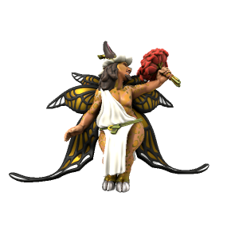

Ludon
Seraph of Ludic Love

Second of the three major love daemons, Ludon is manifest from playful love. Love for life, adventure, parties and the pleasures of good company.
| Alias | Pronunciation | Peoples |
|---|---|---|
| Ludonysos | ludɒnɪsɒs | Kypritic |
| Baluð | baluð | Uttic |